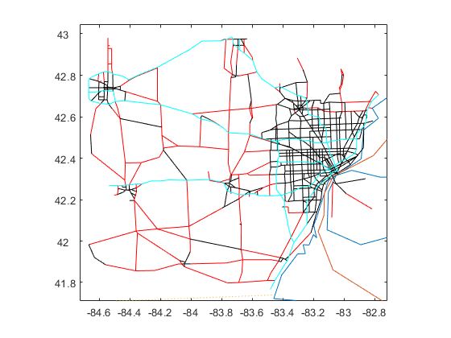
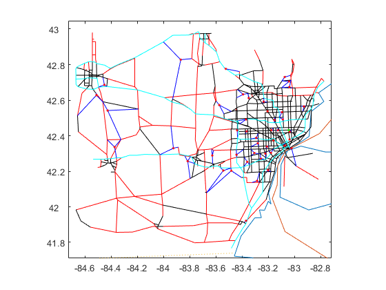
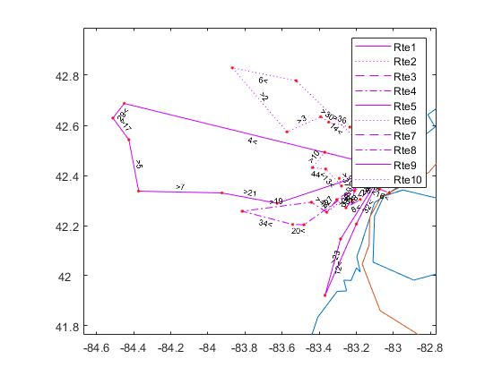
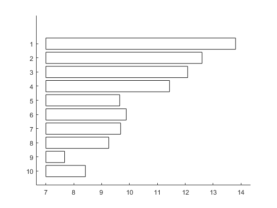
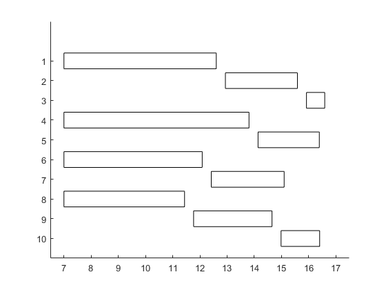

Exam_2 Q1
Contents
Pavel 'Pasha' Koprov
Q1
clear
XY = uscity('XY', mand({'Amarillo' 'Anderson'}, uscity('Name'),...
{'TX' 'SC'}, uscity('ST')));
d = dists(XY(1,:),XY(2,:),'mi')*1.2;
cu = [6 3];
wt = [12 96];
T = 13;
D = ([64 64 56 31 166 62 53 96 126 143 39 45 55;
125 101 40 26 89 104 87 22 57 81 297 163 113].*wt'/2000)';
ppiTL = 136.3;
r = 2*(ppiTL/102.7);
tr = struct('r',r,'Kwt',25,'Kcu',2750);
s = wt./cu;
v = [120 80].*(2000./wt);
hobs = [0.2 0.1]/13;
h = (hobs + 0.11)/(365.2/7);
cTL=tr.r*d;
qmax = maxpayld(s,tr)
Q = [sum(D);qmax];
Cp=[v;0 0]
Ct=[0 0;cTL cTL]
yinit = [0 0;[77 100].*wt/2000];
yfinal = yinit;
ymax=[sum(D);qmax]
Ci = cumsum(Cp+Ct./Q).*h
M = 2;
G = 2;
qmax =
2.7500 25.0000
Cp =
1.0e+04 *
2.0000 0.1667
0 0
Ct =
1.0e+03 *
0 0
3.4590 3.4590
ymax =
6.0000 62.6400
2.7500 25.0000
Ci =
48.0664 3.7598
51.0894 4.0719
Create MILP model
Cp = reshape(repmat(Cp,[T 1 1]),M,T,G)
Ci = reshape(repmat(Ci,[T+1 1 1]),M,T+1,G)
Ci(:,1,:) = 0
Ct=reshape(repmat(Ct,[T 1 1]),M,T,G)
clear mp
mp = Milp('PPlan');
mp.addobj('min',Cp,Ci,Ct)
for g = 1:G
for t = 1:T
for m = 1:M-1
mp.addcstr({[1 -1],{[m m+1],t,g}},{[1 -1],{m,[t t+1],g}},0,'=',0)
end
mp.addcstr({M,t,g},{[1 -1],{M,[t t+1],g}},0,'=',D(t,g))
for m = 1:M
mp.addcstr({m,t,g},0,'<=',{Q(m,g),{m,t,g}})
end
end
end
mp.addlb(0,horzcat(reshape(yinit,M,1,G),zeros(M,T-1,G),reshape(yfinal,M,1,G)),0)
mp.addub(Inf,horzcat(reshape(yinit,M,1,G),repmat(reshape(ymax,M,1,G),1,T-1),reshape(yfinal,M,1,G)), Inf)
mp.addctype('C','C','I');
Cp(:,:,1) =
Columns 1 through 6
20000 20000 20000 20000 20000 20000
0 0 0 0 0 0
Columns 7 through 12
20000 20000 20000 20000 20000 20000
0 0 0 0 0 0
Column 13
20000
0
Cp(:,:,2) =
1.0e+03 *
Columns 1 through 7
1.6667 1.6667 1.6667 1.6667 1.6667 1.6667 1.6667
0 0 0 0 0 0 0
Columns 8 through 13
1.6667 1.6667 1.6667 1.6667 1.6667 1.6667
0 0 0 0 0 0
Ci(:,:,1) =
Columns 1 through 7
48.0664 48.0664 48.0664 48.0664 48.0664 48.0664 48.0664
51.0894 51.0894 51.0894 51.0894 51.0894 51.0894 51.0894
Columns 8 through 14
48.0664 48.0664 48.0664 48.0664 48.0664 48.0664 48.0664
51.0894 51.0894 51.0894 51.0894 51.0894 51.0894 51.0894
Ci(:,:,2) =
Columns 1 through 7
3.7598 3.7598 3.7598 3.7598 3.7598 3.7598 3.7598
4.0719 4.0719 4.0719 4.0719 4.0719 4.0719 4.0719
Columns 8 through 14
3.7598 3.7598 3.7598 3.7598 3.7598 3.7598 3.7598
4.0719 4.0719 4.0719 4.0719 4.0719 4.0719 4.0719
Ci(:,:,1) =
Columns 1 through 7
0 48.0664 48.0664 48.0664 48.0664 48.0664 48.0664
0 51.0894 51.0894 51.0894 51.0894 51.0894 51.0894
Columns 8 through 14
48.0664 48.0664 48.0664 48.0664 48.0664 48.0664 48.0664
51.0894 51.0894 51.0894 51.0894 51.0894 51.0894 51.0894
Ci(:,:,2) =
Columns 1 through 7
0 3.7598 3.7598 3.7598 3.7598 3.7598 3.7598
0 4.0719 4.0719 4.0719 4.0719 4.0719 4.0719
Columns 8 through 14
3.7598 3.7598 3.7598 3.7598 3.7598 3.7598 3.7598
4.0719 4.0719 4.0719 4.0719 4.0719 4.0719 4.0719
Ct(:,:,1) =
1.0e+03 *
Columns 1 through 7
0 0 0 0 0 0 0
3.4590 3.4590 3.4590 3.4590 3.4590 3.4590 3.4590
Columns 8 through 13
0 0 0 0 0 0
3.4590 3.4590 3.4590 3.4590 3.4590 3.4590
Ct(:,:,2) =
1.0e+03 *
Columns 1 through 7
0 0 0 0 0 0 0
3.4590 3.4590 3.4590 3.4590 3.4590 3.4590 3.4590
Columns 8 through 13
0 0 0 0 0 0
3.4590 3.4590 3.4590 3.4590 3.4590 3.4590
Solve using Gurobi
clear params
model = mp.milp2gb
params.outputflag = 1;
result = gurobi(model, params);
x = mp.namesolution(result.x)
TC = result.objval
model =
struct with fields:
name: 'PPlan'
modelsense: 'minimize'
obj: [160×1 double]
lb: [160×1 double]
ub: [160×1 double]
vtype: 'CCCCCCCCCCCCCCCCCCCCCCCCCCCCCCCCCCCCCCCCCCCCCCCCCCCCCCCCCCCCCCCCCCCCCCCCCCCCCCCCCCCCCCCCCCCCCCCCCCCCCCCCCCCCIIIIIIIIIIIIIIIIIIIIIIIIIIIIIIIIIIIIIIIIIIIIIIIIIIII'
A: [104×160 double]
sense: [104×1 char]
rhs: [104×1 double]
--------------------------------------------
Warning: your license will expire in 14 days
--------------------------------------------
Academic license - for non-commercial use only
Gurobi Optimizer version 9.0.3 build v9.0.3rc0 (win64)
Optimize a model with 104 rows, 160 columns and 286 nonzeros
Model fingerprint: 0x830f3373
Variable types: 108 continuous, 52 integer (0 binary)
Coefficient statistics:
Matrix range [1e+00, 6e+01]
Objective range [1e-08, 2e+04]
Bounds range [5e-01, 6e+01]
RHS range [2e-01, 1e+01]
Found heuristic solution: objective 270019.51497
Presolve removed 56 rows and 88 columns
Presolve time: 0.04s
Presolved: 48 rows, 72 columns, 132 nonzeros
Found heuristic solution: objective 259731.18652
Variable types: 46 continuous, 26 integer (5 binary)
Root relaxation: objective 2.444819e+05, 44 iterations, 0.00 seconds
Nodes | Current Node | Objective Bounds | Work
Expl Unexpl | Obj Depth IntInf | Incumbent BestBd Gap | It/Node Time
0 0 244481.897 0 6 259731.187 244481.897 5.87% - 0s
H 0 0 253110.12756 244481.897 3.41% - 0s
H 0 0 246646.37495 244481.897 0.88% - 0s
H 0 0 246644.33489 244481.897 0.88% - 0s
0 0 244553.550 0 6 246644.335 244553.550 0.85% - 0s
0 0 244657.869 0 2 246644.335 244657.869 0.81% - 0s
H 0 0 246368.01852 244657.869 0.69% - 0s
0 0 244702.135 0 8 246368.019 244702.135 0.68% - 0s
H 0 0 246252.01763 244702.135 0.63% - 0s
0 0 244859.429 0 10 246252.018 244859.429 0.57% - 0s
0 0 245441.440 0 8 246252.018 245441.440 0.33% - 0s
0 0 245494.512 0 10 246252.018 245494.512 0.31% - 0s
0 0 245516.982 0 10 246252.018 245516.982 0.30% - 0s
0 0 245519.228 0 12 246252.018 245519.228 0.30% - 0s
0 0 245525.940 0 12 246252.018 245525.940 0.29% - 0s
0 0 245527.949 0 14 246252.018 245527.949 0.29% - 0s
0 0 245530.611 0 12 246252.018 245530.611 0.29% - 0s
0 0 245530.611 0 12 246252.018 245530.611 0.29% - 0s
0 2 245530.611 0 12 246252.018 245530.611 0.29% - 0s
H 3 3 246225.40356 245661.133 0.23% 4.7 0s
H 10 2 246208.52952 245944.776 0.11% 4.9 0s
* 15 0 5 246187.38810 246187.388 0.00% 4.9 0s
Cutting planes:
Gomory: 2
Implied bound: 1
MIR: 12
Flow cover: 1
Relax-and-lift: 1
Explored 16 nodes (171 simplex iterations) in 0.11 seconds
Thread count was 4 (of 4 available processors)
Solution count 9: 246187 246209 246225 ... 270020
Optimal solution found (tolerance 1.00e-04)
Best objective 2.461873881011e+05, best bound 2.461873881011e+05, gap 0.0000%
x =
struct with fields:
Cp: [2×13×2 double]
Ci: [2×14×2 double]
Ct: [2×13×2 double]
TC =
2.4619e+05
Report results
Fp = x.Cp;
Fi = x.Ci;
Ft = x.Ct;
for g = 1:G
mdisp(D(:,g)',[],[],['D' num2str(g)])
mdisp(Fp(:,:,g),[],[],['Fp' num2str(g)])
mdisp(Fi(:,:,g),[],[],['Fi' num2str(g)])
mdisp(Ft(:,:,g),[],[],['Ft' num2str(g)])
end
TCp = sum(sum(sum(Cp.*Fp)));
TCi = sum(sum(sum(Ci.*Fi)));
TCt = sum(sum(sum(Ct.*Ft)));
vdisp('TCp,TCi,TCt,TC')
D1: 1 2 3 4 5 6 7 8 9 10 11 12 13
--:-----------------------------------------------------------------------------------------
1: 0.384 0.384 0.336 0.186 0.996 0.372 0.318 0.576 0.756 0.858 0.234 0.27 0.33
Fp1: 1 2 3 4 5 6 7 8 9 10 11 12 13
---:------------------------------------------------------------
1: 0 0.8280 0 0 2.42 0 0 0 2.75 0 0 0 0
2: 0 0.8280 0 0 2.42 0 0 0 2.75 0 0 0 0
Fi1: 1 2 3 4 5 6 7 8 9 10 11 12 13 14
---:-----------------------------------------------------------------------------------------------
1: 0.000 0.0000 0.0000 0.0000 0 0.00 0.00 0.0000 0.0000 0.00 0.00 0.00 0.000 0.000
2: 0.462 0.0780 0.5220 0.1860 0 1.43 1.05 0.7360 0.1600 2.15 1.30 1.06 0.792 0.462
Ft1: 1 2 3 4 5 6 7 8 9 10 11 12 13
---:----------------------------------------------------
1: 0 1 0 0 1 0 0 0 1 0 0 0 0
2: 0 1 0 0 1 0 0 0 1 0 0 0 0
D2: 1 2 3 4 5 6 7 8 9 10 11 12 13
--:-----------------------------------------------------------------------------
1: 6 4.85 1.92 1.25 4.27 4.99 4.18 1.06 2.74 3.89 14.26 7.82 5.42
Fp2: 1 2 3 4 5 6 7 8 9 10 11 12 13
---:----------------------------------------------------------
1: 13.49 0 0 0 0 24.15 0 0 0 0 25 0 0
2: 13.49 0 0 0 0 24.15 0 0 0 0 25 0 0
Fi2: 1 2 3 4 5 6 7 8 9 10 11 12 13 14
---:-----------------------------------------------------------------------------------------
1: 0.00 0.00 0.00 0.00 0.00 0 0.00 0.00 0.00 0.00 0.00 0.00 0.00 0.00
2: 4.80 12.29 7.44 5.52 4.27 0 19.16 14.98 13.93 11.19 7.30 18.05 10.22 4.80
Ft2: 1 2 3 4 5 6 7 8 9 10 11 12 13
---:----------------------------------------------------
1: 1 -0 0 -0 0 1 -0 -0 -0 -0 1 0 -0
2: 1 -0 -0 -0 -0 1 -0 -0 -0 -0 1 0 -0
: TCp TCi TCt TC
-:------------------------------------------
1: 224,400 1,033.14 20,754.24 246,187.39
Q2
clear, close all
df = table2struct(readtable('Exam2DataF20.xlsx'));
XY = [[df.Longitude]' [df.Latitude]'];
q = [df(2:end).Weight]'/2000;
s = [df(2:end).Density]';
tL = 20/60;
tU = 5/60;
sh = vec2struct('b',1,'e',[df(2:end).Customer]', 'q', q, 's', s);
tr = struct('b',1,'e',1,'tbmin',7,'temax',17,'Kwt',25,'Kcu',2750,...
'maxTC', 10);
i = find([sh.q]'*2000./[sh.s]'/tr.Kcu > 1)
srpls = sh(i).q*2000/sh(i).s/tr.Kcu - 1
sh(end+1) = sh(i);
sh(end).q = srpls*sh(i).q;
sh(i).q = sh(i).q - sh(end).q;
sh = vec2struct(sh,'tU',[sh.q]'*tU, 'tbmin',7,'temax',17);
sdisp(sh)
i =
28
srpls =
0.0160
sh: b e q s tU tbmin temax
--:------------------------------------------
1: 1 2 1.53 6.39 0.1276 7 17
2: 1 3 1.22 18.06 0.1018 7 17
3: 1 4 1.47 12.64 0.1225 7 17
4: 1 5 2.07 18.53 0.1722 7 17
5: 1 6 1.26 7.77 0.1053 7 17
6: 1 7 1.26 2.65 0.1047 7 17
7: 1 8 1.98 13.32 0.1652 7 17
8: 1 9 1.22 2.70 0.1020 7 17
9: 1 10 1.61 6.68 0.1340 7 17
10: 1 11 1.24 5.59 0.1034 7 17
11: 1 12 1.75 4.68 0.1458 7 17
12: 1 13 1.26 3.48 0.1050 7 17
13: 1 14 2.16 3.41 0.1798 7 17
14: 1 15 2.09 8.37 0.1743 7 17
15: 1 16 1.38 12.83 0.1152 7 17
16: 1 17 1.40 7.18 0.1169 7 17
17: 1 18 1.75 3.88 0.1459 7 17
18: 1 19 1.86 2.18 0.1548 7 17
19: 1 20 1.12 5.70 0.0935 7 17
20: 1 21 2.02 20.14 0.1681 7 17
21: 1 22 1.79 11.94 0.1489 7 17
22: 1 23 1.22 14.27 0.1019 7 17
23: 1 24 1.37 1.60 0.1144 7 17
24: 1 25 1.33 9.47 0.1111 7 17
25: 1 26 1.51 17.86 0.1260 7 17
26: 1 27 2.70 5.93 0.2253 7 17
27: 1 28 1.37 9.37 0.1139 7 17
28: 1 29 1.61 1.17 0.1340 7 17
29: 1 30 1.45 4.23 0.1210 7 17
30: 1 31 2.22 10.49 0.1852 7 17
31: 1 32 1.32 8.69 0.1097 7 17
32: 1 33 1.25 10.32 0.1042 7 17
33: 1 34 1.26 2.37 0.1050 7 17
34: 1 35 1.49 5.35 0.1240 7 17
35: 1 36 1.87 5.54 0.1558 7 17
36: 1 37 1.47 7.37 0.1229 7 17
37: 1 38 1.63 10.77 0.1357 7 17
38: 1 39 1.25 10.91 0.1043 7 17
39: 1 40 1.62 4.33 0.1347 7 17
40: 1 41 1.33 10.06 0.1107 7 17
41: 1 42 1.34 7.35 0.1118 7 17
42: 1 43 1.73 8.23 0.1441 7 17
43: 1 44 1.63 24.33 0.1358 7 17
44: 1 45 1.39 8.40 0.1158 7 17
45: 1 46 2.38 21.38 0.1981 7 17
46: 1 29 0.03 1.17 0.0022 7 17
Get road network
expansionAroundXY = 0.1;
[XY2,IJD,isXY,isIJD] = subgraph(usrdnode('XY'),...
isinrect(usrdnode('XY'),boundrect(XY,expansionAroundXY)),...
usrdlink('IJD'));
Label type of road
s = usrdlink(isIJD);
isI = s.Type == 'I';
isIR = isI & s.Urban == ' ';
isIU = isI & ~isIR;
isR = s.Urban == ' ' & ~isI;
isU = ~isI & ~isR;
Plot roads
makemap(XY2,0.03)
h = [];
h = [h pplot(IJD(isR,:),XY2,'r-','DisplayName','Rural Roads')];
h = [h pplot(IJD(isU,:),XY2,'k-','DisplayName','Urban Roads')];
h = [h pplot(IJD(isI,:),XY2,'c-','DisplayName','Interstate Roads')];

Add connector roads from customers to road network
[IJD11,IJD12,IJD22] = addconnector(XY,XY2,IJD);
h = [h pplot(IJD12,[XY; XY2],'b-','DisplayName','Connector Roads')];
h = [h pplot(XY(2:end,:),'r.','DisplayName','Customers')];
h = [h pplot(XY(1,:),'g.','DisplayName','DC')];

Convert road distances to travel times (needs to be after ADDCONNECTOR)
v.IR = 75;
v.IU = 65;
v.R = 50;
v.U = 25;
v.C = 20;
IJT = IJD;
IJT(isIR,3) = IJD(isIR,3)/v.IR;
IJT(isIU,3) = IJD(isIU,3)/v.IU;
IJT(isR,3) = IJD(isR,3)/v.R;
IJT(isU,3) = IJD(isU,3)/v.U;
IJT22 = IJD22;
IJT22(:,3) = IJT(:,3);
IJT12 = IJD12;
IJT12(:,3) = IJD12(:,3)/v.C;
Shortest time routes
n = size(XY,1);
[T,P] = dijk(list2adj([IJT12; IJT22]),1:n,1:n);
T = T+5/60;
Construct & improve routes:
rTCh = @(rte) rteTC(rte,sh,T,tr);
tic
IJS = pairwisesavings(rTCh,sh); toc
tic
r = twoopt(savings(rTCh,sh,IJS),rTCh); toc
Elapsed time is 8.692237 seconds.
Elapsed time is 7.420696 seconds.
add any single-shipment routes
[r,~,Time] = sh2rte(sh,r,rTCh);
ADD SINGLE-SHIPMENT ROUTES:
34.487040: Added shipments 18 28
Plot routes
plotshmt(sh,XY,r,tr)

Display route output structure
[TC,Xflg,out] = rTCh(r);
for i = 1:length(out), sdisp(out(i),false,i), end
1: Rte Loc Cost Arrive Wait TWmin Start LU Depart TWmax Total
--:--------------------------------------------------------------------------
1: 0 1 0.00 0.00 0 7 7.00 0.0000 7.00 Inf 0.00
2: 21 1 0.00 7.00 0 7 7.00 0.0000 7.00 Inf 0.00
3: 7 1 0.00 7.00 0 7 7.00 0.0000 7.00 Inf 0.00
4: 5 1 0.00 7.00 0 7 7.00 0.0000 7.00 Inf 0.00
5: 4 1 0.00 7.00 0 7 7.00 0.0000 7.00 Inf 0.00
6: 29 1 0.00 7.00 0 7 7.00 0.0000 7.00 Inf 0.00
7: 17 1 0.00 7.00 0 7 7.00 0.0000 7.00 Inf 0.00
8: 4 5 1.33 8.33 0 -Inf 8.33 0.1722 8.50 17 1.50
9: 29 30 0.42 8.92 0 -Inf 8.92 0.1210 9.04 17 0.54
10: 17 18 0.52 9.56 0 -Inf 9.56 0.1459 9.71 17 0.67
11: 5 6 0.98 10.69 0 -Inf 10.69 0.1053 10.80 17 1.09
12: 7 8 0.94 11.73 0 -Inf 11.73 0.1652 11.90 17 1.10
13: 21 22 0.72 12.62 0 -Inf 12.62 0.1489 12.77 17 0.87
14: 0 1 1.03 13.80 0 -Inf 13.80 0.0000 13.80 17 1.03
2: Rte Loc Cost Arrive Wait TWmin Start LU Depart TWmax Total
--:--------------------------------------------------------------------------
1: 0 1 0.00 0.00 0 7 7.00 0.0000 7.00 Inf 0.00
2: 36 1 0.00 7.00 0 7 7.00 0.0000 7.00 Inf 0.00
3: 3 1 0.00 7.00 0 7 7.00 0.0000 7.00 Inf 0.00
4: 30 1 0.00 7.00 0 7 7.00 0.0000 7.00 Inf 0.00
5: 2 1 0.00 7.00 0 7 7.00 0.0000 7.00 Inf 0.00
6: 14 1 0.00 7.00 0 7 7.00 0.0000 7.00 Inf 0.00
7: 6 1 0.00 7.00 0 7 7.00 0.0000 7.00 Inf 0.00
8: 14 15 0.82 7.82 0 -Inf 7.82 0.1743 8.00 17 1.00
9: 6 7 0.80 8.80 0 -Inf 8.80 0.1047 8.90 17 0.91
10: 2 3 1.09 10.00 0 -Inf 10.00 0.1018 10.10 17 1.19
11: 3 4 0.70 10.80 0 -Inf 10.80 0.1225 10.92 17 0.82
12: 30 31 0.36 11.28 0 -Inf 11.28 0.1852 11.47 17 0.55
13: 36 37 0.45 11.91 0 -Inf 11.91 0.1229 12.04 17 0.57
14: 0 1 0.57 12.60 0 -Inf 12.60 0.0000 12.60 17 0.57
3: Rte Loc Cost Arrive Wait TWmin Start LU Depart TWmax Total
--:-----------------------------------------------------------------------------
1: 0 1 0.0000 0.00 0 7 7.00 0.0000 7.00 Inf 0.0000
2: 1 1 0.0000 7.00 0 7 7.00 0.0000 7.00 Inf 0.0000
3: 25 1 0.0000 7.00 0 7 7.00 0.0000 7.00 Inf 0.0000
4: 45 1 0.0000 7.00 0 7 7.00 0.0000 7.00 Inf 0.0000
5: 40 1 0.0000 7.00 0 7 7.00 0.0000 7.00 Inf 0.0000
6: 41 1 0.0000 7.00 0 7 7.00 0.0000 7.00 Inf 0.0000
7: 26 1 0.0000 7.00 0 7 7.00 0.0000 7.00 Inf 0.0000
8: 22 1 0.0000 7.00 0 7 7.00 0.0000 7.00 Inf 0.0000
9: 43 1 0.0000 7.00 0 7 7.00 0.0000 7.00 Inf 0.0000
10: 41 42 0.5888 7.59 0 -Inf 7.59 0.1118 7.70 17 0.7005
11: 26 27 0.5516 8.25 0 -Inf 8.25 0.2253 8.48 17 0.7769
12: 22 23 0.3114 8.79 0 -Inf 8.79 0.1019 8.89 17 0.4133
13: 43 44 0.3586 9.25 0 -Inf 9.25 0.1358 9.39 17 0.4945
14: 45 46 0.7890 10.17 0 -Inf 10.17 0.1981 10.37 17 0.9871
15: 1 2 0.2578 10.63 0 -Inf 10.63 0.1276 10.76 17 0.3854
16: 40 41 0.4116 11.17 0 -Inf 11.17 0.1107 11.28 17 0.5224
17: 25 26 0.3225 11.60 0 -Inf 11.60 0.1260 11.73 17 0.4485
18: 0 1 0.3572 12.09 0 -Inf 12.09 0.0000 12.09 17 0.3572
4: Rte Loc Cost Arrive Wait TWmin Start LU Depart TWmax Total
--:-----------------------------------------------------------------------------
1: 0 1 0.0000 0.00 0 7 7.00 0.0000 7.00 Inf 0.0000
2: 27 1 0.0000 7.00 0 7 7.00 0.0000 7.00 Inf 0.0000
3: 46 1 0.0000 7.00 0 7 7.00 0.0000 7.00 Inf 0.0000
4: 19 1 0.0000 7.00 0 7 7.00 0.0000 7.00 Inf 0.0000
5: 33 1 0.0000 7.00 0 7 7.00 0.0000 7.00 Inf 0.0000
6: 34 1 0.0000 7.00 0 7 7.00 0.0000 7.00 Inf 0.0000
7: 20 1 0.0000 7.00 0 7 7.00 0.0000 7.00 Inf 0.0000
8: 33 34 0.7256 7.73 0 -Inf 7.73 0.1050 7.83 17 0.8305
9: 20 21 0.3326 8.16 0 -Inf 8.16 0.1681 8.33 17 0.5007
10: 34 35 0.5569 8.89 0 -Inf 8.89 0.1240 9.01 17 0.6809
11: 19 20 0.6639 9.68 0 -Inf 9.68 0.0935 9.77 17 0.7574
12: 46 29 0.3973 10.17 0 -Inf 10.17 0.0022 10.17 17 0.3995
13: 27 28 0.4514 10.62 0 -Inf 10.62 0.1139 10.73 17 0.5653
14: 0 1 0.7024 11.44 0 -Inf 11.44 0.0000 11.44 17 0.7024
5: Rte Loc Cost Arrive Wait TWmin Start LU Depart TWmax Total
-:-----------------------------------------------------------------------------
1: 0 1 0.0000 0.00 0 7 7.00 0.0000 7.00 Inf 0.0000
2: 23 1 0.0000 7.00 0 7 7.00 0.0000 7.00 Inf 0.0000
3: 32 1 0.0000 7.00 0 7 7.00 0.0000 7.00 Inf 0.0000
4: 12 1 0.0000 7.00 0 7 7.00 0.0000 7.00 Inf 0.0000
5: 32 33 0.7153 7.72 0 -Inf 7.72 0.1042 7.82 17 0.8195
6: 12 13 0.4951 8.31 0 -Inf 8.31 0.1050 8.42 17 0.6001
7: 23 24 0.5409 8.96 0 -Inf 8.96 0.1144 9.07 17 0.6553
8: 0 1 0.5744 9.65 0 -Inf 9.65 0.0000 9.65 17 0.5744
6: Rte Loc Cost Arrive Wait TWmin Start LU Depart TWmax Total
--:-----------------------------------------------------------------------------
1: 0 1 0.0000 0.00 0 7 7.00 0.0000 7.00 Inf 0.0000
2: 10 1 0.0000 7.00 0 7 7.00 0.0000 7.00 Inf 0.0000
3: 15 1 0.0000 7.00 0 7 7.00 0.0000 7.00 Inf 0.0000
4: 37 1 0.0000 7.00 0 7 7.00 0.0000 7.00 Inf 0.0000
5: 44 1 0.0000 7.00 0 7 7.00 0.0000 7.00 Inf 0.0000
6: 13 1 0.0000 7.00 0 7 7.00 0.0000 7.00 Inf 0.0000
7: 15 16 0.5184 7.52 0 -Inf 7.52 0.1152 7.63 17 0.6336
8: 37 38 0.2515 7.89 0 -Inf 7.89 0.1357 8.02 17 0.3873
9: 13 14 0.4055 8.43 0 -Inf 8.43 0.1798 8.61 17 0.5853
10: 44 45 0.2804 8.89 0 -Inf 8.89 0.1158 9.00 17 0.3962
11: 10 11 0.2803 9.28 0 -Inf 9.28 0.1034 9.39 17 0.3837
12: 0 1 0.4965 9.88 0 -Inf 9.88 0.0000 9.88 17 0.4965
7: Rte Loc Cost Arrive Wait TWmin Start LU Depart TWmax Total
--:-----------------------------------------------------------------------------
1: 0 1 0.0000 0.00 0 7 7.00 0.0000 7.00 Inf 0.0000
2: 24 1 0.0000 7.00 0 7 7.00 0.0000 7.00 Inf 0.0000
3: 8 1 0.0000 7.00 0 7 7.00 0.0000 7.00 Inf 0.0000
4: 9 1 0.0000 7.00 0 7 7.00 0.0000 7.00 Inf 0.0000
5: 39 1 0.0000 7.00 0 7 7.00 0.0000 7.00 Inf 0.0000
6: 38 1 0.0000 7.00 0 7 7.00 0.0000 7.00 Inf 0.0000
7: 9 10 0.4134 7.41 0 -Inf 7.41 0.1340 7.55 17 0.5474
8: 8 9 0.2759 7.82 0 -Inf 7.82 0.1020 7.93 17 0.3780
9: 38 39 0.3531 8.28 0 -Inf 8.28 0.1043 8.38 17 0.4573
10: 39 40 0.2575 8.64 0 -Inf 8.64 0.1347 8.77 17 0.3921
11: 24 25 0.4093 9.18 0 -Inf 9.18 0.1111 9.30 17 0.5204
12: 0 1 0.3856 9.68 0 -Inf 9.68 0.0000 9.68 17 0.3856
8: Rte Loc Cost Arrive Wait TWmin Start LU Depart TWmax Total
--:-----------------------------------------------------------------------------
1: 0 1 0.0000 0.00 0 7 7.00 0.0000 7.00 Inf 0.0000
2: 11 1 0.0000 7.00 0 7 7.00 0.0000 7.00 Inf 0.0000
3: 42 1 0.0000 7.00 0 7 7.00 0.0000 7.00 Inf 0.0000
4: 31 1 0.0000 7.00 0 7 7.00 0.0000 7.00 Inf 0.0000
5: 35 1 0.0000 7.00 0 7 7.00 0.0000 7.00 Inf 0.0000
6: 16 1 0.0000 7.00 0 7 7.00 0.0000 7.00 Inf 0.0000
7: 11 12 0.1463 7.15 0 -Inf 7.15 0.1458 7.29 17 0.2921
8: 31 32 0.3417 7.63 0 -Inf 7.63 0.1097 7.74 17 0.4513
9: 16 17 0.2346 7.98 0 -Inf 7.98 0.1169 8.09 17 0.3516
10: 35 36 0.2426 8.34 0 -Inf 8.34 0.1558 8.49 17 0.3984
11: 42 43 0.3426 8.84 0 -Inf 8.84 0.1441 8.98 17 0.4868
12: 0 1 0.2747 9.25 0 -Inf 9.25 0.0000 9.25 17 0.2747
9: Rte Loc Cost Arrive Wait TWmin Start LU Depart TWmax Total
-:-----------------------------------------------------------------------------
1: 0 1 0.0000 0.00 0 7 7.00 0.0000 7.00 Inf 0.0000
2: 18 1 0.0000 7.00 0 7 7.00 0.0000 7.00 Inf 0.0000
3: 18 19 0.2587 7.26 0 -Inf 7.26 0.1548 7.41 17 0.4135
4: 0 1 0.2587 7.67 0 -Inf 7.67 0.0000 7.67 17 0.2587
10: Rte Loc Cost Arrive Wait TWmin Start LU Depart TWmax Total
--:-----------------------------------------------------------------------------
1: 0 1 0.0000 0.00 0 7 7.00 0.0000 7.00 Inf 0.0000
2: 28 1 0.0000 7.00 0 7 7.00 0.0000 7.00 Inf 0.0000
3: 28 29 0.6417 7.64 0 -Inf 7.64 0.1340 7.78 17 0.7757
4: 0 1 0.6417 8.42 0 -Inf 8.42 0.0000 8.42 17 0.6417
Display Gantt chort of route spans
b= arrayfun(@(x) (x.Start(1)),out); b = b(:);
e= arrayfun(@(x) (x.Depart(end)),out); e = e(:);
figure
gantt([b e])

Route time and delivery cubic ft
for i = 1:length(r)
idx = r{i}(isorigin(r{i}));
Maxload(i) = sum([sh(idx).q]'*2000./[sh(idx).s]');
end
vdisp('Time, Maxload')
: Time Maxload
--:----------------
1: 6.80 2,734.53
2: 5.60 2,639.77
3: 5.09 2,717.57
4: 4.44 2,549.38
5: 2.65 2,682.73
6: 2.88 2,558.49
7: 2.68 2,645.69
8: 2.25 2,536.57
9: 0.67 1,704.13
10: 1.42 2,749.30
number of trucks
m = length(Time);
M = 1:m;
V = 10;
v = Time;
mp = Milp('# of Trucks');
mp.addobj('min',ones(1,m),zeros(m));
for i = M
mp.addcstr({V,{i}},'>=',{v+tL,{i,':'}})
end
for j = M
mp.addcstr(0,{':',j},'=',1)
end
mp.addctype('B','B')
Use INTLINPROG to solve
ilp = mp.milp2ilp;
x = intlinprog(ilp{:});
x = mp.namesolution(x);
B = arrayfun(@(i) find(x.arg2(i,:)),find(x.arg1),'UniformOutput',false);
B{:}
fprintf('Number of required trucks is %d.\n', length(B))
LP: Optimal objective value is 3.782037.
Cut Generation: Applied 1 clique cut, 2 cover cuts,
and 2 mir cuts.
Lower bound is 4.000000.
Heuristics: Found 1 solution using ZI round.
Upper bound is 5.000000.
Relative gap is 16.67%.
Cut Generation: Applied 4 clique cuts.
Lower bound is 4.000000.
Relative gap is 16.67%.
Branch and Bound:
nodes total num int integer relative
explored time (s) solution fval gap (%)
34 0.04 2 4.000000e+00 2.980232e-06
Optimal solution found.
Intlinprog stopped because the objective value is within a gap tolerance of the
optimal value, options.AbsoluteGapTolerance = 0 (the default value). The intcon
variables are integer within tolerance, options.IntegerTolerance = 1e-05 (the
default value).
ans =
2 5 9
ans =
1 8
ans =
3 7
ans =
4 6 10
Number of required trucks is 4.
Chart for Trucks;
b=[]
for i=1:length(B)
b = [b; 7 7+Time(B{i}(1))]
for j=2:length(B{i})
b = [b; b(end)+tL b(end)+tL+Time(B{i}(j))]
end
end
figure
gantt([b])
b =
[]
b =
7.0000 12.6032
b =
7.0000 12.6032
12.9366 15.5859
b =
7.0000 12.6032
12.9366 15.5859
15.9192 16.5914
b =
7.0000 12.6032
12.9366 15.5859
15.9192 16.5914
7.0000 13.8044
b =
7.0000 12.6032
12.9366 15.5859
15.9192 16.5914
7.0000 13.8044
14.1377 16.3926
b =
7.0000 12.6032
12.9366 15.5859
15.9192 16.5914
7.0000 13.8044
14.1377 16.3926
7.0000 12.0857
b =
7.0000 12.6032
12.9366 15.5859
15.9192 16.5914
7.0000 13.8044
14.1377 16.3926
7.0000 12.0857
12.4191 15.0998
b =
7.0000 12.6032
12.9366 15.5859
15.9192 16.5914
7.0000 13.8044
14.1377 16.3926
7.0000 12.0857
12.4191 15.0998
7.0000 11.4367
b =
7.0000 12.6032
12.9366 15.5859
15.9192 16.5914
7.0000 13.8044
14.1377 16.3926
7.0000 12.0857
12.4191 15.0998
7.0000 11.4367
11.7700 14.6526
b =
7.0000 12.6032
12.9366 15.5859
15.9192 16.5914
7.0000 13.8044
14.1377 16.3926
7.0000 12.0857
12.4191 15.0998
7.0000 11.4367
11.7700 14.6526
14.9859 16.4033
